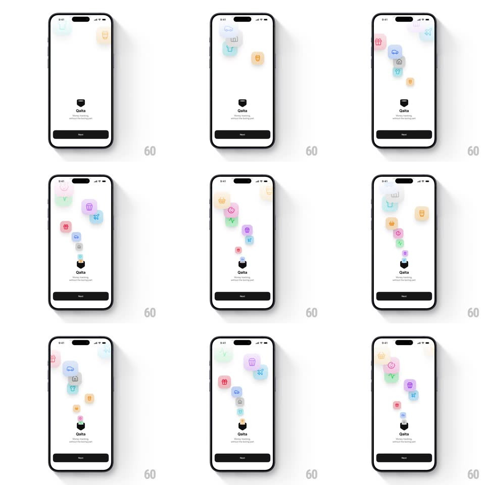

Media
Frame-by-frame

Rebuild this animation 1:1: Qalta's looping splash screen - colorful pastel category icons float down from the top of the screen in a loose meandering column and get sucked one by one into the pocket-shaped Qalta logo.

Rebuild this animation 1:1: Qalta's looping splash screen - colorful pastel category icons float down from the top of the screen in a loose meandering column and get sucked one by one into the pocket-shaped Qalta logo. ## Integration A splash/hero screen with an emitter of floating icon sprites and a single sink point (the logo); run on rAF or a physics-light animation loop, no dependencies required. ## Scene - Background: white/light field. - Center: the black pocket-shaped Qalta logo mark, "Qalta" wordmark beneath it, tagline "Money tracking, without the boring part" below that. - Bottom: full-width black "Next" button with rounded corners. - Actors: pastel category icons in soft rounded-square chips (car, bar chart, t-shirt, receipt, gift, home, shopping cart, plane, smiley, checkmark, trash, scissors...) in pink, blue, teal, yellow, purple, green, and orange. ## Motion spec Pattern: looping icon vacuum pull - icons float down and get sucked into a pocket-shaped logo. - Icons spawn above the visible area and drift downward in a loose, slightly diagonal column toward the logo. - Each icon wanders with a gentle horizontal sway (~20-30px amplitude) as it falls. - As an icon approaches the logo, the fall accelerates and the icon scales down (~1.0 → 0.2) and fades out, disappearing into the pocket mark. - Multiple icons are in flight at once (~6-10), staggered so one is absorbed every ~300-500ms. - The loop is continuous: new icons keep spawning at the top as others are absorbed. - The logo mark, wordmark, tagline, and Next button stay static. ## Calibration - Fall duration per icon: ~2.5-3.5s from spawn to absorption, with ease-in acceleration near the logo. - Sway: 20-30px horizontal amplitude, ~1.5s period. - Absorption: final ~300ms, scale to 0.2, fade to 0. - Spawn cadence: one icon every ~300-500ms, ~6-10 in flight. ## Reduced motion A single static arrangement of icons above the logo; no falling, sway, or absorption. ## Don't miss - The pull has a vacuum feel: icons ACCELERATE and shrink into the mark instead of stopping at it. - The column meanders - icons sway side to side, they don't fall in a straight line. - The loop never empties the screen; there are always icons in flight.